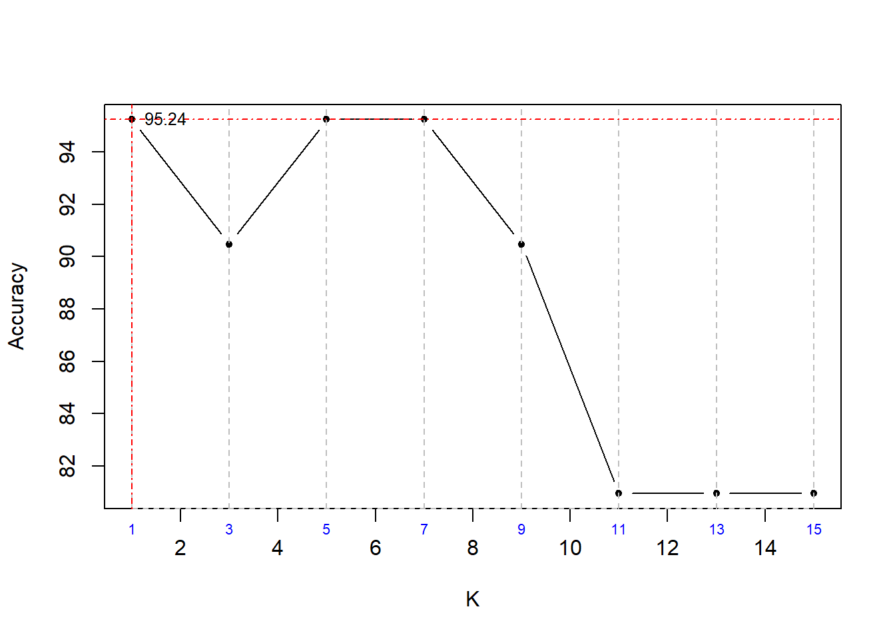

library(class)
library(tidyverse)
zoo <- read.csv("C:/Users/Alex/Downloads/Data/Zoo.csv", stringsAsFactors = FALSE)
head(zoo, n=10) # View fiest 10 observations of the datasetstr(zoo) # Structure of dataset## 'data.frame': 101 obs. of 18 variables:
## $ animal.name: chr "aardvark" "antelope" "bass" "bear" ...
## $ hair : int 1 1 0 1 1 1 1 0 0 1 ...
## $ feathers : int 0 0 0 0 0 0 0 0 0 0 ...
## $ eggs : int 0 0 1 0 0 0 0 1 1 0 ...
## $ milk : int 1 1 0 1 1 1 1 0 0 1 ...
## $ airborne : int 0 0 0 0 0 0 0 0 0 0 ...
## $ aquatic : int 0 0 1 0 0 0 0 1 1 0 ...
## $ predator : int 1 0 1 1 1 0 0 0 1 0 ...
## $ toothed : int 1 1 1 1 1 1 1 1 1 1 ...
## $ backbone : int 1 1 1 1 1 1 1 1 1 1 ...
## $ breathes : int 1 1 0 1 1 1 1 0 0 1 ...
## $ venomous : int 0 0 0 0 0 0 0 0 0 0 ...
## $ fins : int 0 0 1 0 0 0 0 1 1 0 ...
## $ legs : int 4 4 0 4 4 4 4 0 0 4 ...
## $ tail : int 0 1 1 0 1 1 1 1 1 0 ...
## $ domestic : int 0 0 0 0 0 0 1 1 0 1 ...
## $ catsize : int 1 1 0 1 1 1 1 0 0 0 ...
## $ type : int 1 1 4 1 1 1 1 4 4 1 ...We are interested in the variable type. We’ll convert it into categorical variable
zoo$type <- factor(zoo$type) # converting to factor
str(zoo)## 'data.frame': 101 obs. of 18 variables:
## $ animal.name: chr "aardvark" "antelope" "bass" "bear" ...
## $ hair : int 1 1 0 1 1 1 1 0 0 1 ...
## $ feathers : int 0 0 0 0 0 0 0 0 0 0 ...
## $ eggs : int 0 0 1 0 0 0 0 1 1 0 ...
## $ milk : int 1 1 0 1 1 1 1 0 0 1 ...
## $ airborne : int 0 0 0 0 0 0 0 0 0 0 ...
## $ aquatic : int 0 0 1 0 0 0 0 1 1 0 ...
## $ predator : int 1 0 1 1 1 0 0 0 1 0 ...
## $ toothed : int 1 1 1 1 1 1 1 1 1 1 ...
## $ backbone : int 1 1 1 1 1 1 1 1 1 1 ...
## $ breathes : int 1 1 0 1 1 1 1 0 0 1 ...
## $ venomous : int 0 0 0 0 0 0 0 0 0 0 ...
## $ fins : int 0 0 1 0 0 0 0 1 1 0 ...
## $ legs : int 4 4 0 4 4 4 4 0 0 4 ...
## $ tail : int 0 1 1 0 1 1 1 1 1 0 ...
## $ domestic : int 0 0 0 0 0 0 1 1 0 1 ...
## $ catsize : int 1 1 0 1 1 1 1 0 0 0 ...
## $ type : Factor w/ 7 levels "1","2","3","4",..: 1 1 4 1 1 1 1 4 4 1 ...brplt <- barplot(table(zoo$type), col = "steelblue3", ylim = c(0,50), xlab = "Types", ylab = "Count")
text(brplt, table(zoo$type), sprintf('%d',table(zoo$type)), pos = 3)## [1] "Animals in Type: 1 -------------------"
## $` `
## [1] "aardvark" "antelope" "bear" "boar" "buffalo" "calf"
## [7] "cavy" "cheetah" "deer" "dolphin" "elephant" "fruitbat"
## [13] "giraffe" "girl" "goat" "gorilla" "hamster" "hare"
## [19] "leopard" "lion" "lynx" "mink" "mole" "mongoose"
## [25] "opossum" "oryx" "platypus" "polecat" "pony" "porpoise"
## [31] "puma" "pussycat" "raccoon" "reindeer" "seal" "sealion"
## [37] "squirrel" "vampire" "vole" "wallaby" "wolf"
##
## [1] "Animals in Type: 2 -------------------"
## $` `
## [1] "chicken" "crow" "dove" "duck" "flamingo" "gull"
## [7] "hawk" "kiwi" "lark" "ostrich" "parakeet" "penguin"
## [13] "pheasant" "rhea" "skimmer" "skua" "sparrow" "swan"
## [19] "vulture" "wren"
##
## [1] "Animals in Type: 3 -------------------"
## $` `
## [1] "pitviper" "seasnake" "slowworm" "tortoise" "tuatara"
##
## [1] "Animals in Type: 4 -------------------"
## $` `
## [1] "bass" "carp" "catfish" "chub" "dogfish" "haddock"
## [7] "herring" "pike" "piranha" "seahorse" "sole" "stingray"
## [13] "tuna"
##
## [1] "Animals in Type: 5 -------------------"
## $` `
## [1] "frog" "frog" "newt" "toad"
##
## [1] "Animals in Type: 6 -------------------"
## $` `
## [1] "flea" "gnat" "honeybee" "housefly" "ladybird" "moth" "termite"
## [8] "wasp"
##
## [1] "Animals in Type: 7 -------------------"
## $` `
## [1] "clam" "crab" "crayfish" "lobster" "octopus" "scorpion"
## [7] "seawasp" "slug" "starfish" "worm"We’ll normalise the data to bring the values of all the variables to the same scale
normalise <- function(x){ # Function based on Min-Max
return ((x - min(x)) / (max(x) - min(x)))
}
zoo.norm <- data.frame("animal.name"=zoo$animal.name, # saving the new data as zoo.norm
"animal.type"=zoo$type, # re-arranging columns 1 & 18
lapply(zoo[-c(1,18)], normalise)) # and normalising the data
head(zoo.norm, n=10) # view first 10 observations of the datasetlibrary(caTools)
set.seed(789)
split = sample.split(zoo.norm$animal.type, SplitRatio = 0.80)
train_set = subset(zoo.norm[-c(1,2)], split == TRUE) # train dataset
test_set = subset(zoo.norm[-c(1,2)], split == FALSE) # test dataset
train_set_labels = subset(zoo.norm$animal.type, split == TRUE) # labels for train dataset
test_set_labels = subset(zoo.norm$animal.type, split == FALSE) # labels for test dataset
table(zoo.norm$animal.type) # total count for all animal types##
## 1 2 3 4 5 6 7
## 41 20 5 13 4 8 10table(train_set_labels) # count for each animal type in training set## train_set_labels
## 1 2 3 4 5 6 7
## 33 16 4 10 3 6 8table(test_set_labels) # count for each animal type in test set## test_set_labels
## 1 2 3 4 5 6 7
## 8 4 1 3 1 2 2We’ll find out the best k value for the KNN model.
k_acc <- c()
for(i in seq(1,15,2)){
set.seed(852)
t_model <- knn(train = train_set,
test = test_set,
cl = train_set_labels,
k=i)
t_cm <- table(test_set_labels, t_model)
t_acc <- sum(diag(t_cm)) / sum(t_cm)
k_acc <- c(k_acc, round(t_acc, digits = 4)*100 )
}
k_acc.df <- data.frame(seq(1,15,2),k_acc)
colnames(k_acc.df) <- c("K", "Accuracy")
k_acc.df
Based on the plot, we can choose k=1 which has an accuracy of 95.24%. But if we have a large dataset, we should have a k value greater than 1. Here we can see that other than k=1, model with k value equal to 5 and 7 also give an accuracy of 95.24%.
So we’ll choose k=5.
Model with k=5
set.seed(852)
zoo_pred <- knn(train = train_set,
test = test_set,
cl = train_set_labels,
k=5)
cm <- table(test_set_labels, zoo_pred, dnn = c("Actual", "Predicted"))
cm # Confusion Matrix## Predicted
## Actual 1 2 3 4 5 6 7
## 1 8 0 0 0 0 0 0
## 2 0 4 0 0 0 0 0
## 3 0 0 0 1 0 0 0
## 4 0 0 0 3 0 0 0
## 5 0 0 0 0 1 0 0
## 6 0 0 0 0 0 2 0
## 7 0 0 0 0 0 0 2# We see miscalssification for Type 3 which was predicted as Type 4
accuracy <- sum(diag(cm)) / sum(cm)
accuracy # Accuracy - 95.238%## [1] 0.952381Eventhough the KNN model we created with k=5 has misclassifications, the model we created gives an accuracy of 95.238%